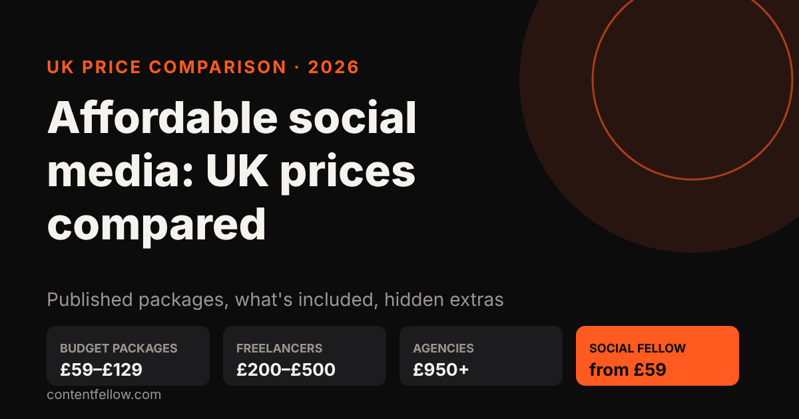
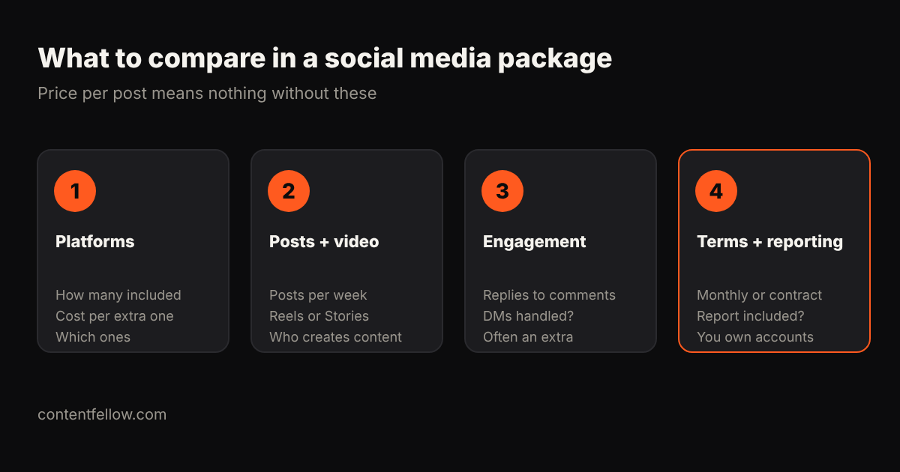

Affordable Social Media Management for UK Small Businesses: 2026 Price Comparison
Quick answer: Affordable social media management in the UK starts at about £59 to £129 a month for a productised plan. Freelancers typically charge £200–£500 a month for basic help, and agency packages usually start around £950 a month and can pass £3,000. The cheapest headline price isn't always the cheapest plan: extras for engagement, reporting and additional platforms can double it. (Prices as published by each provider on 16 October 2026. Check their sites for current offers.)

Transparency note: ContentFellow wrote this comparison and our Social Fellow is included. We've only listed prices providers publish themselves.
Best monthly social media management service for small businesses UK
The best monthly social media management service for a UK small business publishes its price, says how many platforms and posts you get, and has no long contract. ContentFellow's Social Fellow is £59 a month for 2 platforms or £129 a month for 3 platforms with daily posting, no VAT added, with a free trial.
UK price comparison (checked October 2026)
| Provider | Published price | What you get / notes |
|---|---|---|
| ContentFellow Social Fellow | £59 / £129 per month, no VAT | 2–3 platforms, daily posting, replies, ad set-up |
| Wrise | £99/mo + VAT | Low-cost package; extras charged per platform and post |
| Hello Social Avenue | entry £250–£500/mo | More strategy and shoots |
| Freelancer | £300–£1,000/mo | Personal service, limited cover |
Prices are from each provider's public page or the guides cited on this page; competitor prices may add VAT and change often. ContentFellow is not VAT registered, so its prices are the full amount.
What is the cheapest option?
The cheapest managed plan we found is ContentFellow's £59 a month Social Fellow. Below that, DIY scheduling tools are free but take your time.
Start a free trial → No card, no contract. Updated 19 October 2026.
Published UK social media management prices
| Provider / type | Published price | What the price covers (as published) |
|---|---|---|
| ContentFellow Social Fellow | £59 a month (Manage) or £129 a month (Manage + Post) | Manage: up to 2 platforms, weekday replies, ad set-up. Manage + Post: up to 3 platforms, daily posting, trend research. Free 7-day trial |
| Wrise | £99 a month + VAT | Starter package; extras: platform £40, post £40, reporting £30, engagement £120 a month |
| Freelancers (Birdeye UK guide) | £200–£500 a month | Basic help |
| Hello Social Avenue | Entry level £250–£500; partner package from £950 a month | Light support to done-with-you |
| Small agencies (Birdeye UK guide) | £500–£1,500 a month | Posting, content, reporting |
| Social Chameleon | £3,499 a month + VAT (Basic) | 2 platforms, 16 posts, report, meeting, video editing |
For full UK market ranges (including in-house salaries) see how much social media management costs in the UK.
Compare the total, not the headline

A £99 package with a second platform (£40), monthly reporting (£30) and engagement (£120) becomes £289 a month + VAT. Before comparing, add up what you actually need:
- Platforms: how many are included, and what each extra costs.
- Posts and video: posts per week, whether Reels or Stories are included, and who creates the photos and videos.
- Engagement: replying to comments and messages is often an add-on.
- Terms and reporting: monthly or a fixed contract, is a report included, and do you keep ownership of your accounts and content.
Red flags
- Follower guarantees. Bought or "guaranteed" followers damage reach and trust.
- No approval step. You should see posts before they go out.
- Accounts in the agency's name. Your pages should always belong to you.
- Long contracts for basic posting. Simple posting shouldn't need a 12-month lock-in.
Which option fits?
| Your situation | Sensible choice |
|---|---|
| You want a consistent presence on 1–3 platforms | Productised plan (£59–£129) |
| You want a person to brief and work with | Freelancer (£200–£500) |
| You run paid ads and need strategy and creative | Agency (£950+) |
| You need original video every month | Add a video service, e.g. video production or editing |
How the Social Fellow compares
The Social Fellow is £59 a month (Manage) or £129 a month (Manage + Post), where Manage covers up to 2 platforms with weekday replies and ad set-up, and Manage + Post covers up to 3 platforms with daily posting and trend research. Billing is monthly, you approve content before it goes live, and you can try it free for 7 days (a short content plan and 5 posts on one platform; you keep the content).
Start your free Social Fellow trial →
Free AI visibility check
We ask ChatGPT and Gemini 10 questions your customers ask, and email you who they recommend instead of you, plus the 3 fixes that matter most. Free, within 2 working days.
Frequently asked questions
What is the cheapest social media management in the UK?
Productised plans start at about £59 to £129 a month. Some freelancers charge less, but check how many posts, platforms and replies are included.
Is £99 a month enough for social media management?
It can cover basic posting on one or two platforms. Engagement, reporting and extra platforms are often charged on top, so compare the total.
Do social media packages include VAT?
Not always. Several UK agencies publish prices plus VAT, so check before comparing.
Should a small business pay for social media management or do it themselves?
If you post consistently yourself, DIY is fine. If posting keeps slipping, a low-cost managed plan usually pays for itself in time saved.
Can I try social media management before committing?
Some providers offer trials. The ContentFellow Social Fellow has a free 7-day trial with no card needed.